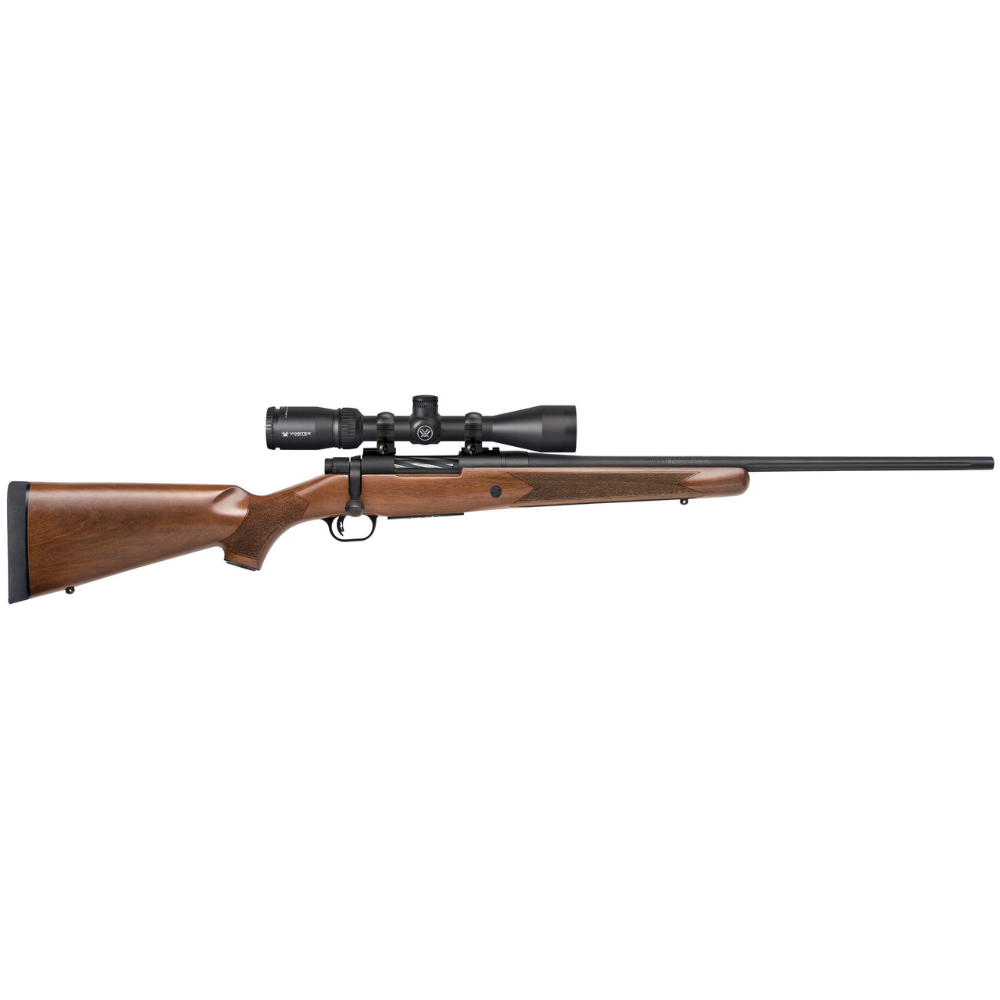

<!DOCTYPE html>
<html lang="hu">
<head>
  <meta charset="UTF-8">
  <meta name="viewport" content="width=device-width, initial-scale=1.0">
  <meta name="description" content="Mossberg Patriot .308 Winchester vadászpuskák: Walnut, Vortex Scoped Combo és Predator változatok valódi termékfotókkal.">
  <meta name="theme-color" content="#171a17">
  <title>Mossberg Patriot .308 — Modellek és részletek</title>
  <link rel="stylesheet" href="style.css">
</head>
<body>
<script>
'use strict';
// Az oldal minden látható eleme JavaScriptből jön létre.
const artwork={"patriot-walnut": "", "patriot-vortex": "", "patriot-predator": ""};
const exhibits=[
  {
    "id": "patriot-walnut",
    "name": "Patriot Walnut .308",
    "category": "Diófa tus",
    "era": ".308 Winchester",
    "short": "Természetes diófa tus, sötét fémfelületek és klasszikus vadászpuska-sziluett.",
    "text": "A Mossberg Patriot Walnut .308 Winchester a család hagyományos fa tusos változata. A tus természetes erezete és a sötét fémrészek kontrasztja adja a megjelenését. A bemutató a kivitel formáját és anyaghasználatát szemlélteti.",
    "material": "Diófa tus, fémrészek",
    "interest": "A Walnut megnevezés a diófa tusra utal."
  },
  {
    "id": "patriot-vortex",
    "name": "Patriot Walnut Vortex .308",
    "category": "Diófa tus",
    "era": ".308 Winchester · Vortex Combo",
    "short": "A diófa tusos Patriot Vortex távcsővel bemutatott gyári csomagváltozata.",
    "text": "A Patriot Walnut Vortex Scoped Combo .308 Winchester változat a fa tusos Patriotot Vortex távcsővel társítja. A gyártó a .308-as változatot 27940-es modellazonosítóval is bemutatja. A képen a távcsöves kivitel látható.",
    "material": "Diófa tus, fémrészek, távcső",
    "interest": "A Scoped Combo elnevezés a távcsövet tartalmazó csomagváltozatot jelöli."
  },
  {
    "id": "patriot-predator",
    "name": "Patriot Predator .308",
    "category": "Szintetikus tus",
    "era": ".308 Winchester · Predator FDE",
    "short": "Homokszínű FDE szintetikus tus és sötét fémfelületek a Patriot családban.",
    "text": "A Mossberg Patriot Predator .308 Winchester a modellcsalád FDE színű szintetikus tusos változata. Homokszínű tusa és sötét fémrészei jól megkülönböztethető megjelenést adnak. A .308-as Predator a gyártó 27874-es modellazonosítójával szerepel.",
    "material": "FDE színű szintetikus tus, fémrészek",
    "interest": "Az FDE a Flat Dark Earth színmegnevezés rövidítése."
  }
];
const features=[["01 / MODELLCSALÁD", "Mossberg Patriot", "Klasszikus vonalvezetésű, modern forgó-tolózáras vadászpuskák."], ["02 / KALIBER", ".308 Winchester", "A bemutató a Patriot család .308 Winchester változataira összpontosít."], ["03 / ANYAGOK", "Fa és szintetikus tus", "A diófa természetes erezete és az FDE színű szintetikus felület két eltérő karakter."], ["04 / VÁLTOZATOK", "Egy család, több forma", "Hagyományos Walnut, Vortex távcsöves csomag és Predator kivitel."]];
const terms=[["Mit jelent a .308 Winchester?", "A bemutatott puskák kaliberének megnevezése. A Patriot családban más kaliberek is léteznek; ezen az oldalon a .308-as változatok szerepelnek."], ["Mit jelent a Walnut?", "A walnut angolul diófát jelent. A modellnévben a természetes fa tusra utal."], ["Mi a Vortex Scoped Combo?", "A Patriot távcsövet tartalmazó csomagváltozatának elnevezése. A bemutatott képen diófa tusos kivitel szerepel."], ["Mi a Predator változat?", "A Patriot család egyik modellváltozata. A bemutatott .308 Winchester Predator homokszínű, FDE szintetikus tussal rendelkezik."]];
document.body.innerHTML=`
<a class="skip" href="#main">Ugrás a tartalomra</a>
<header class="wrap"><div class="nav"><a class="brand" href="#" aria-label="Mossberg Patriot .308 kezdőlap"><span class="brandmark" aria-hidden="true">◇</span> PATRIOT .308</a><button class="menu" aria-expanded="false" aria-controls="navigation">Menü ☰</button><nav id="navigation" aria-label="Fő navigáció"><a href="#gyujtemeny">Gyűjtemény</a><a href="#reszletek">Anyagok és formák</a><a href="#fogalmak">Fogalomtár</a></nav><span class="navtag">MOSSBERG PATRIOT</span></div></header>
<main id="main"><div class="wrap"><section class="hero" aria-labelledby="hero-title"><div><div class="eyebrow">Mossberg. Patriot. .308 Winchester.</div><h1 id="hero-title">Mossberg<br><em>Patriot .308</em></h1><p class="intro">Ismerd meg a Mossberg Patriot .308 Winchester változatait. Valódi termékfotók, klasszikus diófa és modern szintetikus tus: egy modellcsalád több arca.</p><div class="actions"><a class="primary" href="#gyujtemeny">Modellek felfedezése <span aria-hidden="true">↗</span></a><a class="textlink" href="#reszletek">Anyagok és formák</a></div></div><div class="heroart"><div class="artnote">A GYŰJTEMÉNYBŐL<b>Patriot Walnut Vortex .308</b>MOSSBERG PATRIOT / TERMÉKFOTÓ</div><span class="coordinates" aria-hidden="true">KLASSZIKUS GYÖKEREK / KORTÁRS MEGJELENÉS</span></div></section><div class="herofoot"><div><strong>03</strong> bemutatott kivitel</div><div><strong>.308</strong> Winchester</div><div><strong>01</strong> modellcsalád</div><span class="footend">Mossberg Patriot</span></div>
<section class="section" id="gyujtemeny" aria-labelledby="collection-title"><div class="sectionhead"><div><div class="eyebrow">01 / A gyűjtemény</div><h2 id="collection-title">Ismerd meg a modelleket.</h2></div><p>A Patriot .308 Winchester három megjelenése. Fedezd fel a fa tusos, a távcsöves és a szintetikus változatot.</p></div><div class="filters" role="group" aria-label="Szűrés tusanyag szerint">${['Mind','Diófa tus','Szintetikus tus'].map((x,i)=>`<button class="filter" data-filter="${x}" aria-pressed="${i===0}">${x}</button>`).join('')}</div><div class="catalog" id="catalog"></div><p class="result" id="result" role="status" aria-live="polite"></p></section></div>
<section class="section timeline-section" id="reszletek" aria-labelledby="history-title"><div class="wrap"><div class="sectionhead"><div><div class="eyebrow">02 / Anyagok és formák</div><h2 id="history-title">Hagyományos anyagok.<br>Kortárs részletek.</h2></div><p>A Mossberg Patriot karakterét a hagyományos arányok és az eltérő kivitelek adják.</p></div><div class="timeline">${features.map(([n,t,p])=>`<article class="era"><small>${n}</small><h3>${t}</h3><p>${p}</p></article>`).join('')}</div></div></section>
<div class="wrap"><section class="section knowledge" id="fogalmak" aria-labelledby="terms-title"><div><div class="eyebrow">03 / Fogalomtár</div><h2 id="terms-title">A megértés<br>az alapoknál kezdődik.</h2><p>Néhány fontos kifejezés, amely segít eligazodni a gyűjteményben.</p></div><div>${terms.map(([t,p],i)=>`<details ${i===0?'open':''}><summary>${t}</summary><p>${p}</p></details>`).join('')}</div></section></div></main>
<div class="wrap"><footer><span>PATRIOT .308 © ${new Date().getFullYear()} · Ismeretterjesztő projekt<br>Mossberg Patriot .308 Winchester · Független típusbemutató</span><a href="#">Vissza a tetejére ↑</a></footer></div>
<dialog id="exhibit-dialog" aria-labelledby="modal-title"><button class="close" aria-label="Adatlap bezárása">Bezárás ×</button><div id="modal-content"></div></dialog>`;
const catalog=document.querySelector('#catalog');
function renderCatalog(category='Mind'){
  const selected=exhibits.filter(item=>category==='Mind'||item.category===category);
  catalog.innerHTML=selected.map(item=>`<article class="card"><div class="cardart"><span class="cardnumber">${String(exhibits.indexOf(item)+1).padStart(2,'0')} / ${String(exhibits.length).padStart(2,'0')}</span>${artwork[item.id]}</div><div class="cardbody"><div class="cardmeta">${item.category} · ${item.era}</div><h3>${item.name}</h3><p>${item.short}</p><button class="detail" data-id="${item.id}" aria-label="${item.name} adatlapjának megnyitása">Jellemzők és részletek <span aria-hidden="true">↗</span></button></div></article>`).join('');
  document.querySelector('#result').textContent=`${selected.length} modell a gyűjtemény ${exhibits.length} eleméből`;
}
renderCatalog();
document.querySelectorAll('.filter').forEach(button=>button.addEventListener('click',()=>{
  document.querySelectorAll('.filter').forEach(item=>item.setAttribute('aria-pressed',String(item===button)));
  renderCatalog(button.dataset.filter);
}));
const dialog=document.querySelector('#exhibit-dialog');
let lastTrigger;
catalog.addEventListener('click',event=>{
  const button=event.target.closest('[data-id]');if(!button)return;
  const item=exhibits.find(x=>x.id===button.dataset.id);lastTrigger=button;
  document.querySelector('#modal-content').innerHTML=`<div class="cardmeta">${item.category}</div><h2 id="modal-title">${item.name}</h2><div class="modalart">${artwork[item.id]}</div><p>${item.text}</p><div class="facts"><div><small>Változat</small>${item.era}</div><div><small>Jellemző anyagok</small>${item.material}</div></div><p><strong>Érdekesség:</strong> ${item.interest}</p>`;
  dialog.showModal();
});
dialog.querySelector('.close').addEventListener('click',()=>dialog.close());
dialog.addEventListener('click',event=>{if(event.target===dialog){const r=dialog.getBoundingClientRect();if(event.clientX<r.left||event.clientX>r.right||event.clientY<r.top||event.clientY>r.bottom)dialog.close();}});
dialog.addEventListener('close',()=>lastTrigger?.focus());
const menu=document.querySelector('.menu'),navigation=document.querySelector('nav');
menu.addEventListener('click',()=>{const expanded=menu.getAttribute('aria-expanded')!=='true';menu.setAttribute('aria-expanded',String(expanded));navigation.classList.toggle('open',expanded);});
navigation.querySelectorAll('a').forEach(link=>link.addEventListener('click',()=>{menu.setAttribute('aria-expanded','false');navigation.classList.remove('open');}));
</script>
</body>
</html>
